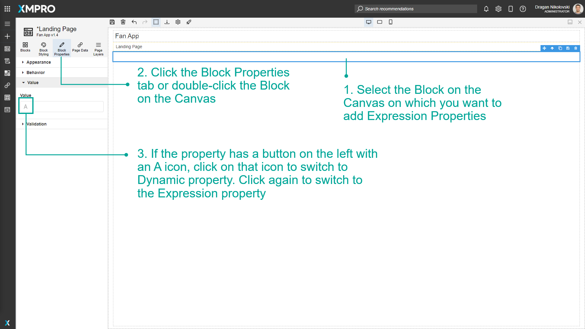
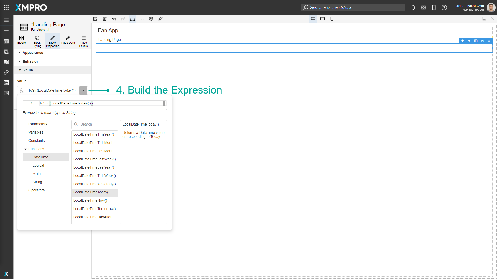

Use Expression Properties
Expression Properties allow you to create short scripts to create a custom value. This custom value can be calculated from other Variables, Parameters, user input, data from Data Sources, and various Functions, Constants, and Operators. See the Variable and Expressions article to learn more about Expressions.
Note
It is recommended that you read the article listed below to improve your understanding of Properties.
How to Enable Expression Properties
To enable Expression Properties, follow the steps below:
Select the Block on the Canvas on which you want to add Expression Properties.
Click the Block Properties tab or double-click the Block on the Canvas.
If the property has a button on the left with an A icon, click on that icon to switch to Dynamic Property. Click again to switch to the Expression Property.

Build the Expression.

Last modified: May 28, 2025